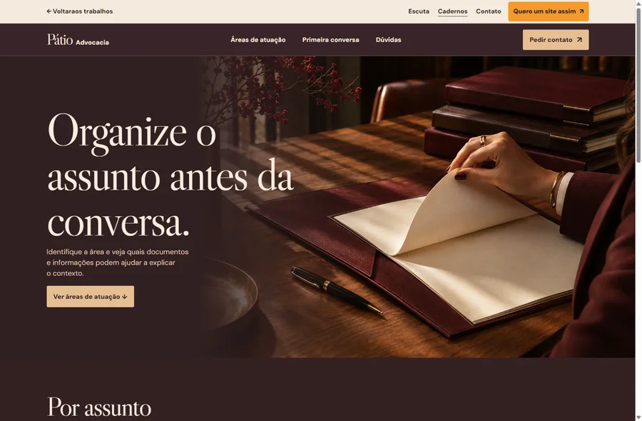
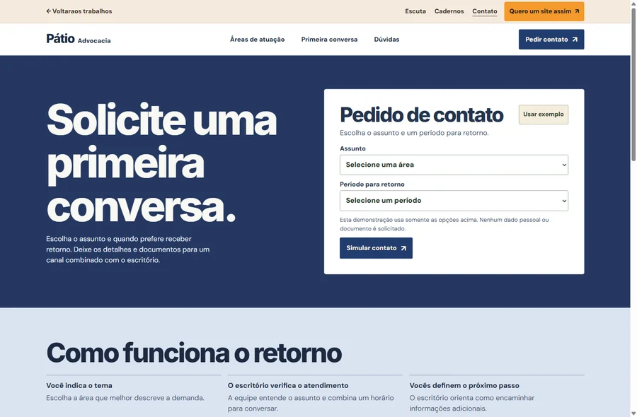

Escuta
Explica como começa o atendimento e ajuda a identificar o assunto da primeira conversa.
Abrir demonstraçãoTrês propostas para um escritório de advocacia. Abra uma versão para experimentar o primeiro contato.
Explica como começa o atendimento e ajuda a identificar o assunto da primeira conversa.
Abrir demonstração
Organiza áreas, documentos e perguntas conforme a demanda.
Abrir demonstração
Abre com um pedido curto, sem campo para dados pessoais ou anexos.
Abrir demonstração